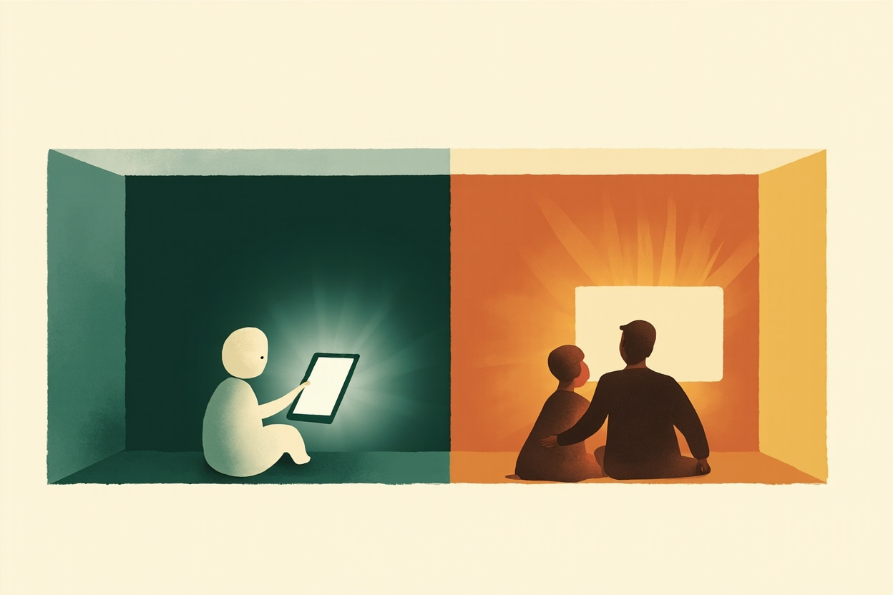
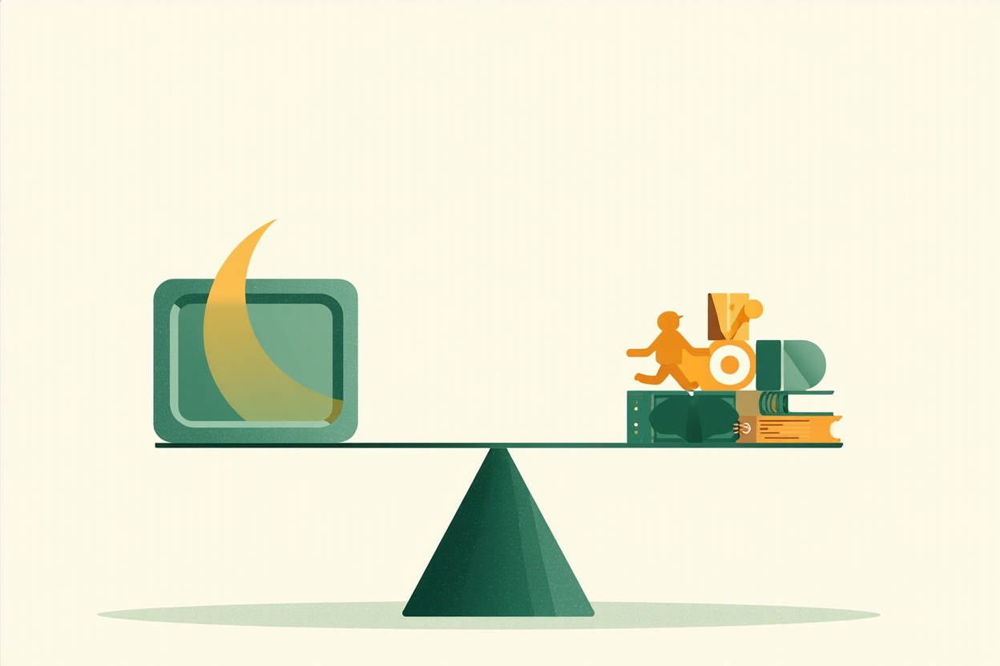

⚠️ 免责声明：本章为家庭教育通识科普，仅供家庭教育参考，不构成医疗、心理或法律建议。每个孩子的年龄、气质与家庭环境差异很大，文中方法需要个体化调整；对孩子的情绪、行为或发育疑虑（如持续情绪低落、明显功能受损），请及时到正规医疗机构儿童保健科、发育行为儿科或精神心理科寻求专业评估，本站只科普一般知识，不做任何诊断。本站不推荐任何具体机构、课程、App 或商品，无商业合作、无带货链接。各节观点均标注权威来源，以来源原文为准；如需情绪支持，可拨打全国 12356 心理援助热线。
本章目标（约25分钟）：学完你能——①准确说出 WHO 与美国儿科学会（AAP）分年龄的屏幕时间建议，并知道为什么学龄儿童没有全球统一的"小时数"；②用"内容、情境、孩子"三个维度判断一次屏幕使用是否健康，而不是只盯着时长；③分清屏幕影响中哪些证据扎实（睡眠挤占、户外活动不足）、哪些被恐慌夸大；④开一次家庭会议，落地一份含"无屏区、无屏时段、内容约定"的家庭媒体计划；⑤分年龄段做数字素养教育：隐私、信息辨别、网络欺凌与诈骗；⑥用 WHO 官方口径分清"游戏热爱"与"游戏障碍"，并识别"戒网瘾学校"类机构的陷阱；⑦应对"关屏就崩溃""同学都在看"等高难场景。
怎么用本章：孩子 0-6 岁重点读第一、四、五节；小学生重点读第四、六、七节；青春期孩子直接从第二、六、七节读起。屏幕规则要全家一致才有效，所以读之前建议先诚实审视自己的手机习惯（第五节）——这一章表面写给孩子，实际一半是写给家长的。
一、先弄清官方口径：到底建议看多久
全球两大权威机构给出的分年龄建议，以及为什么学龄段"没有统一小时数"
晚上九点的拉锯战：屏幕冲突是每个家庭的必修课
晚上九点，你第四次说"再看五分钟就关"，六岁的孩子盯着平板一动不动，时间到了，你伸手去拿，尖叫和眼泪瞬间爆发（示例）。七岁的女儿一写作业就说累，一拿起电话手表跟同学语音就精神百倍（示例）。十三岁的儿子把房门一关，你从门缝里看到屏幕的蓝光，敲开门时他猛地翻过手机（示例）——这三个场景，几乎是当代家庭屏幕冲突的标准剧本。
屏幕问题之所以难，是因为它同时是健康问题（睡眠、视力、活动量）、教育问题（注意力、学习动机）、关系问题（每一次"关掉"都是一次冲突）和价值观问题（数字时代到底需要什么能力）。网上关于屏幕的说法又极端分裂：一边是"电子产品毁掉一代人"的恐慌文，一边是"禁止屏幕才是害孩子"的反驳文。本章的任务，是带你回到官方指南与同行评审研究的原始口径，把恐慌和放纵都放下，建立一套可执行、可调整、全家一致的屏幕治理方案。
WHO 与 AAP：两大官方口径的分年龄建议
世界卫生组织 2019 年发布的《5岁以下儿童身体活动、久坐行为和睡眠指南》是屏幕时间领域级别最高的全球性官方文件，它给出的建议非常明确：1 岁以下婴儿不建议任何屏幕时间；1-2 岁不建议久坐看屏幕（2 岁以上如需接触，应高质量内容且有时间限制）；2-4 岁每天久坐屏幕时间不超过 1 小时，越少越好。同一份指南还配套给出了身体活动与睡眠建议：1 岁以下每天多次地板互动游戏；3-4 岁每天至少 180 分钟各种强度的身体活动；各年龄段都有明确的睡眠时长区间。注意这份指南的思路：它管的不只是"屏幕"，而是24 小时活动行为的整体分配——屏幕时间之所以要限制，核心原因是它挤占了身体活动、面对面互动和睡眠。这个"挤占"视角（第三节详述）是理解所有屏幕建议的钥匙：问题从来不只是孩子看了什么，而是看屏幕的时候，他没有做什么。
美国儿科学会（AAP）2016 年的政策声明《Media and Young Minds》是另一份被全球广泛引用的文件，口径与 WHO 高度一致但更细：18 月龄以下避免使用屏幕媒体，唯一例外是视频聊天（和祖辈视频这类双向互动不算被动观看）；18-24 月龄如要引入，应选择高质量内容，并且家长陪着一起看，帮孩子理解看到的东西；2-5 岁每天不超过 1 小时高质量节目，同样建议共同观看。AAP 特别强调"共同观看"（co-viewing）：幼儿看到画面里的小狗，你指着说"看，小狗在跑，我们家楼下的狗狗也会跑"，这才叫使用屏幕；把孩子放在动画片前自己去刷手机，只是"电子保姆"。AAP 在配套声明《Media Mindsets》中进一步提醒：对幼儿，真人互动的学习效果显著优于屏幕单向输入，两岁前的"视频教学"效果非常有限。
学龄与青春期：为什么"没有统一小时数"
很多家长困惑：6 岁以上到底每天能看多久？答案是——权威机构刻意不再给单一数字。AAP 在 2016 年之后的更新口径中，把 5 岁以上儿童的"每天 X 小时"改成了"制定家庭媒体使用计划"（Family Media Use Plan），要求家庭保证屏幕使用不挤占睡眠（学龄儿童 9-12 小时、青少年 8-10 小时）、每天 1 小时身体活动、面对面社交和学习时间之后，再谈娱乐屏幕怎么安排。
这个转变的逻辑是：一个 10 岁孩子每天 1.5 小时屏幕，如果用来和同学视频、查资料、画数字画，睡眠运动都充足，和一个把 1.5 小时全部刷完就瘫着不动、还熬夜的孩子，健康含义完全不同。到了学龄段，"怎么用"比"用多久"更能预测结果——这也是本章第二节"三维度"框架的由来。中国口径方面，《未成年人保护法》设有"网络保护"专章，《未成年人网络保护条例》（2024 年施行）对平台提出了未成年人模式、时长管理、消费限制等要求；国内游戏平台对未成年人也有统一的防沉迷时段与时长限制——也就是说，公共规则管住了平台的下限，家庭计划管住自家的上限与质量。
| 年龄段 | 官方建议（WHO / AAP） | 家庭落地要点 |
|---|
| 0-18 个月 | 不建议屏幕（视频聊天除外） | 真人互动无可替代：对话、抚触、地板游戏 |
| 18-24 个月 | 如引入：高质量内容 + 家长陪看 | 每次很短、内容慢节奏；陪着讲，不独自丢给屏幕 |
| 2-5 岁 | 每天 ≤1 小时高质量内容，越少越好 | 共同观看 + 看后延伸（把动画里的东西在现实中玩一遍） |
| 6-12 岁 | 无统一小时数；家庭媒体计划，不挤占睡眠/运动/学习/社交 | 约定无屏区与无屏时段；创造类使用可放宽，纯消耗类从严 |
| 12-18 岁 | 同上，重心转向自主管理与数字素养 | 规则从"家长定"过渡到"共同谈"；重点管睡前与学业冲突时段 |
这张表请全家一起看一遍：你会发现，年龄越小，建议越"硬"（直接给上限）；年龄越大，建议越"软"（给框架让家庭自己填）。这不是机构偷懒，而是发展规律的体现——幼儿的大脑正处在面对面互动塑造的关键阶段，屏幕的机会成本极高；而青少年的问题更多是自我管理、内容安全与生活平衡，需要的是能力而不只是禁令。
二、比时长更重要的三个维度：内容、情境、孩子
同样是"一小时屏幕"，质量可以差出十倍——判断屏幕使用健康度的完整框架
三维度框架：看什么、怎么看、谁在看
研究者与临床指南逐渐形成一个共识：评价屏幕使用，至少要看三个维度。第一维是内容：看的是节奏缓慢、有教育设计的节目，还是高强度刺激的短视频流？玩的是需要规划协作的游戏，还是纯粹的随机开箱？第二维是情境：独自瘫在沙发上看，还是和家人一起看、边看边聊？看的时间在睡前还是白天？看完之后是接着去运动，还是瘫着不动？第三维是孩子本身：几岁、什么气质、屏幕之外有什么替代活动、最近的情绪与睡眠状态如何？
三个维度合起来才能下判断。举个例子（示例）：同样是每天 40 分钟，A 家 8 岁孩子饭后和父母看一集纪录片、边看边讨论恐龙，周末还去了自然博物馆——这是健康的屏幕使用；B 家 8 岁孩子睡前独自在被窝里刷搞笑短视频到打哈欠还停不下来——同样的"40 分钟"甚至更短，性质完全不同。只盯着时长数字，就像只盯着"每天吃饭几小时"却不管吃了什么。
被动消费 vs 创造使用：屏幕的两种截然不同的用法
把屏幕使用粗略分成两类，管理策略会清晰很多。被动消费类：刷短视频、无目的地翻信息流、看算法推送的一个接一个——特点是低门槛、高刺激、无止境，孩子（和大人）几乎不需要动用任何能力，停下来反而难受。创造与工具类：用绘图软件画画、剪一段视频、编程小游戏、查资料完成一个课题、和有共同爱好的朋友联机协作——特点是孩子在输出，屏幕是工具而不是奶嘴。
AAP 的口径中，"高质量内容"与创造类使用可以相对宽松，而被动消费类要从严——尤其对幼儿，快节奏、强刺激的内容与后续注意力问题存在相关（相关不等于因果，但方向值得警惕）。实操建议：家庭媒体计划里把两类分开记账，比如"创造类每周 N 次不设时长上限（但守 bedtime），纯刷类每天限时"。同时警惕一个漏洞：很多"学习 App"本质是游戏化刷题，孩子在里面获得的刺激模式与娱乐游戏没有区别，别被"教育"标签迷惑——判断标准永远是：孩子是在动脑输出，还是在被投喂。
内容与情境：三维度里家长最能控制的两维
给幼儿选内容，记住三个筛选器：节奏慢（画面切换不频繁、有留白，给孩子处理和反应的时间）、有互动设计（会停下来问"你觉得接下来会怎样"，邀请孩子回答）、贴近生活（看完能在现实中延伸：数数、认颜色、模仿友好行为）。给学龄儿童选内容，加上两个标准：准确性（科普类内容是否靠谱，可以和孩子一起交叉验证，顺便练批判性思维——衔接第8章）和价值观（内容如何处理冲突、如何对待弱者）。给青春期的孩子，内容筛选权应该逐步移交，家长的角色从"守门员"变成"讨论者"：与其偷偷审查，不如问"你最近关注的博主讲了什么，你怎么看"。一个实用技巧是"看后延伸"：幼儿看完关于彩虹的动画，雨后就带他去找彩虹；孩子看完一个手工视频，周末就一起做。延伸把屏幕内容变成了现实活动的引子，而不是现实活动的替代品。国内可用的公共工具：各视频平台的"青少年模式/未成年人模式"（依据《未成年人网络保护条例》要求平台提供）可以过滤不适宜内容并限制时长，把它作为底线装置，但别指望它替代家长的内容判断和陪伴。

插画 · AI 生成 — 独自刷屏与共同使用：同样一块屏幕，两种发展含义
情境维度上，发展研究里有个一致的发现方向：对幼儿，有大人陪同、有互动的屏幕使用，效果显著好于独自观看——大人可以暂停、解释、联系生活，把单向输入变成双向对话。这就是哈佛儿童发展中心"发球与回球"（serve & return）框架的应用：孩子每一次指着屏幕发出"球"（"看！大象！"），大人接住并回一个"球"（"对呀，大象的鼻子好长，它在喝水"），大脑的联结就在这样的往返中建立；而屏幕单方面的声光轰炸，发不出需要孩子回应的"球"，也接不住孩子发出的"球"。情境维度还包括时间点：睡前一小时是全家（不分年龄）的屏幕禁区，原因见第三节；吃饭时间是第二个天然禁区——餐桌对话是家庭语言互动密度最高的场景之一，让位给屏幕等于主动放弃。至于"谁在看"，其实也照出了家长自己：如果全家的常态是各自抱一块屏幕坐在同一个沙发上，孩子的"屏幕问题"只是家庭生活方式的缩影（第五节详述）。
三、屏幕的真实影响：把证据和恐慌分开
哪些担心有扎实证据，哪些是道德恐慌——按证据强度排序的四笔账
证据最强的两笔账：睡眠挤占，与户外不足、近视关联
在所有屏幕危害中，对睡眠的影响证据最扎实、机制最清楚：其一，时间挤占——"再看一集"直接从睡眠时间里面扣；其二，生理唤醒——剧情、游戏、社交消息让大脑处于兴奋状态，躺下后难以降落；其三，光线——夜间强光（尤其短波蓝光）会推迟褪黑素分泌、干扰生物钟；其四，卧室里的设备造成"随时可及"的诱惑与夜间打断。而睡眠对儿童青少年的意义怎么强调都不过分：生长激素在深睡眠分泌，记忆在睡眠中巩固，睡眠不足直接与情绪调节变差、注意力下降、学业表现受损相关。所以各权威机构的建议高度一致：睡前 1 小时（至少 30 分钟）全家无屏，幼儿的卧室不放屏幕设备，学龄儿童与青少年的设备夜间充电位置放在卧室之外。这是整章性价比最高的一条规则：它不需要争论"看多少合适"，只需要守住"什么时候不看"。如果你的家庭只能执行一条屏幕规则，就选这条。
第二笔账是视力。近视是屏幕时代家长最直观的焦虑，而研究给出的机制比"看屏幕伤眼睛"更准确：近视风险的核心变量是长时间近距离用眼加上户外自然光照不足——户外光照刺激视网膜多巴胺分泌、抑制眼轴过快增长，这条证据链在多项大样本研究中相当稳固。屏幕（尤其手机、平板）之所以成为近视风险因素，是因为它同时占了这两头：近距离、久盯、室内。纸质书看太久同样有风险，只是屏幕更容易一看就停不下来。实操结论有两条。第一，护眼的主战场在户外：保证每天足够的白天户外时间（学龄儿童建议每天累计 2 小时上下，分段完成也可以；WHO 对儿童青少年的身体活动指南同样强调每日活动量），比任何"护眼模式""防蓝光膜"都实在——后者不能替代休息与户外。第二，近距离用眼执行"20-20-20"式休息：每 20 分钟左右，看 20 英尺（约 6 米）外的东西 20 秒，或者干脆起身活动；屏幕越大、距离越远越好（电视 > 电脑 > 平板 > 手机）。国内卫健委历年发布的近视防控文件口径与此一致：增加户外活动、减少持续近距离用眼是核心措施。
第三笔账与总账：注意力的证据状态，与"挤占假说"
"短视频毁注意力"是流传最广的担忧，但证据状态需要如实说明：研究发现幼儿期过长的屏幕时间与后续注意力问题、执行功能较弱存在相关，高强度快节奏内容与幼儿的注意力困难关联更明显；但在学龄儿童与青少年中，"刷短视频导致注意力永久损伤"的因果证据并不充分——相关可能反映的是双向影响（注意力调节困难的孩子也更容易沉迷即时刺激），也可能被家庭环境等第三变量解释。诚实的结论是：不必恐慌，但要设防。设防的逻辑不是"屏幕烧坏了大脑"，而是行为习惯的塑造——如果一个孩子习惯了每 15 秒一次的高强度奖赏节奏，低刺激活动（阅读、听课、写作业）会显得越来越难熬，这是行为层面的"胃口被养刁"，是可逆的。对策也正是行为层面的：保护每日的"慢活动"时间（阅读、户外、自由玩耍、无聊发呆），限制被动刷类内容的单次时长，把创造类活动安排在屏幕时间里。执行功能（工作记忆、抑制控制、认知灵活）是可以在真实互动与游戏中练习的——第1章、第3章讲过的游戏与惯例，正是注意力的健身房。

插画 · AI 生成 — 挤占假说：屏幕的问题在于它拿走了什么
把前几笔账合起来看，会发现一个共同结构：屏幕的伤害大多是间接的——它本身未必有毒，但它挤占了孩子发展真正需要的东西：睡眠、户外、面对面互动、自由玩耍、深度阅读。这就是发展研究中的"挤占假说"（displacement hypothesis）：预测孩子发展结果的，与其说是屏幕时间本身，不如说是屏幕时间从哪些活动里扣出来的。从睡眠和运动里扣，伤害最大；从无聊发呆里扣，几乎无害甚至有益。这个视角立刻改变了管理策略：与其问"今天屏幕超时了没有"，不如先问"今天的睡眠、户外、对话、阅读都到位了吗"。到位了，屏幕时间稍微弹性一点无伤大雅；没到位，再短的屏幕时间也是在伤口上撒盐。这也是为什么 AAP 把学龄段建议改成"家庭媒体计划"——计划的本质不是给屏幕上限额，而是先把必须保住的活动排进日程，剩下的才是屏幕的位置。顺序对了，大部分争吵会自动消失。
四、家庭媒体计划：一套能落地的规则
从家庭会议到无屏区、无屏时段——五步建一份全家的屏幕公约
方法框：家庭媒体计划五步法
第一步 · 开家庭会议：全家（含孩子）一起谈，先谈"屏幕帮我们做了什么"再谈"它拿走了什么"，让孩子参与而不是被宣判。
第二步 · 先保刚需：把睡眠（固定上床时间）、户外活动、作业与阅读、家庭共处（如晚餐）先排进每日时间表。
第三步 · 划无屏区与无屏时段：至少两条——餐桌无屏、睡前 1 小时无屏；设备夜间充电位放在卧室外。
第四步 · 分类约定内容：创造类（画画/编程/查资料）与纯消耗类（刷视频/无目的游戏）分开定规则；幼儿内容家长把关，学龄共同商定，青春期以讨论代替审查。
第五步 · 定期复盘调整：每月一次家庭会议检查执行情况，孩子守约则逐步放宽自主权，规则随年龄升级。
依据 AAP 家庭媒体计划框架整理；执行细节需按自家情况个体化调整
这份计划的关键词是"全家"：规则必须覆盖家长自己（第五节），否则孩子的第一反应永远是"凭什么"。AAP 官方提供了家庭媒体计划的在线模板工具（HealthyChildren 官网 Media 专栏内，英文），结构与此五步一致：先列出每个家庭成员的媒体使用现状，再共同制定各时段的规则。计划写出来贴在冰箱上，比一百句口头规定都管用。
无屏区与无屏时段：最小规则集
如果家庭会议暂时开不起来，可以先从"最小规则集"开始——只需两条，但全家无例外执行：餐桌无屏（吃饭时所有人手机不进餐厅，包括家长；来消息饭后再回）和睡前无屏（睡前 1 小时全家进入"降落程序"：洗漱、阅读、聊天，设备统一在客厅充电）。这两条覆盖了证据最强的两个风险点（社交互动挤占、睡眠挤占），执行成本却最低。
执行技巧有三个。其一，物理设计优先于意志力：给设备设一个固定的"睡觉的家"（客厅充电篮），到点全家设备集体入住，比每次靠吼"放下手机"省力得多——环境设计胜过意志力，这条对大人孩子同样成立。其二，替代活动要先备好：收走屏幕的同时要给出现实选项（桌游、共读、散步、听音频故事），否则孩子面对的是真空，真空必然被争吵填满。其三，家长先做到：孩子在餐桌下看到你的手机屏幕亮着，规则就已经死了。
分年龄移交自主权，并知道公共规则的底线在哪里
屏幕管理有一条容易忽略的主线：目标是让孩子最终自己会管，所以在孩子做到的范围内，管理权要随年龄逐步移交。0-6 岁：家长全权决定内容、时长与时段，核心是共同观看与保护睡眠户外；6-12 岁：规则共同商定，孩子在约定框架内有一定选择权（比如自己决定把当天的娱乐屏幕时间用在周末哪一段），创造类使用可以换取更多自主空间；12-18 岁：底线规则收窄到"睡眠优先、学业时段、内容安全"三件事，其余交给孩子自我管理，家长的角色是复盘时的顾问——"这周你自己觉得屏幕安排得怎么样？"移交自主权的节奏取决于孩子表现出的自我管理能力，而不是单纯看年龄：守约记录好的孩子提前放宽，屡次失控的孩子暂时收紧并一起找原因。这个"信任是挣来的"逻辑本身，就是第10章要讲的自主感与胜任感的实操——孩子管理屏幕的过程，就是练习自我调节的过程。青春期特别提醒：查收手机、偷看聊天记录这类侵入式监控会严重损伤信任（第13章详述），更好的方式是设备使用透明化约定：安装什么、和谁聊、遇到什么，愿意主动说的孩子，才是安全的。
家庭计划之外，还有三层公共规则值得家长知道。第一层，学校规则："双减"文件要求学校控制作业总量、保障睡眠与体育锻炼时间，多数中小学对手机进校园有明确管理（原则上不得带入课堂）——家长配合学校口径，家庭与学校一致，孩子才没有"钻缝隙"的空间。第二层，平台规则：《未成年人网络保护条例》要求平台提供未成年人模式、限制未成年人直播打赏与不当内容推送、游戏企业执行实名与时长限制——遇到平台不落实，可以通过 12377 等官方渠道举报。第三层，法律底线：《未成年人保护法》"网络保护"专章明确了家长、学校、平台、政府各自的责任，网络欺凌、个人信息滥用都有对应的法律救济路径（第14章校园问题部分会展开网络欺凌的应对）。对家长的实用含义：你不必独自对抗整个注意力经济——平台的未成年人模式是现成的底线装置，学校的手机管理是现成的外部规则，法律是最后的后盾；家庭计划要做的，是在这些底线之上建立自家的质量标准与生活习惯。
五、家长自己：榜样效应与"无手机陪伴"
孩子的屏幕习惯，一半是家庭生活方式的镜子——这一节写给家长
榜样效应与"无手机陪伴"：孩子的屏幕习惯是家庭的镜子
多项家庭媒体研究给出方向一致的结论：家长的屏幕使用习惯与孩子高度相关——家长刷手机时间长的家庭，孩子屏幕时间也长；家长把手机带上餐桌、带进卧室的家庭，孩子也倾向于这样做。这不是基因宿命，而是两条朴素的机制：模仿（孩子照着大人的样子学习"什么是正常生活"）与环境（家里屏幕随手可得、大人随时在线，孩子的使用自然水涨船高）。换句话说，你想让孩子成为什么样的屏幕使用者，先成为那个样子。给家长的自查清单（诚实作答）：我最近一次和孩子玩的时候，手机在哪里？我在孩子面前刷手机时，他知道我在做什么吗？我家的电视是不是常年当背景音开着？我要求孩子睡前不看屏幕，我自己做到了吗？如果多数答案让你心虚，先别急着管孩子——从"孩子醒着的时候，我的手机放在固定位置、非紧急不碰"开始改。家长不需要完美（工作时间确实要用电子设备），需要的是可解释："爸爸现在查一个工作资料，十分钟后来陪你搭积木"——说明用途、给出时限、说到做到，本身就是数字素养的示范。
更深一层的代价在互动质量上。发展心理学有个扎心的研究方向：家长陪孩子时看手机（"phubbing"，phone snubbing），对孩子的发起（指着东西给你看、问问题、求关注）回应更少、更迟、更敷衍；而"发球与回球"式的及时回应，恰恰是幼儿语言、情绪调节与安全感发展的养料。偶尔看手机无伤大雅，问题在于常态化的"人在心不在"：孩子会逐渐学会不再向你发球，或者用升级的行为（哭闹、捣乱）来抢回你的注意力。实操建议是设"无手机陪伴时段"：每天至少一段（哪怕 30 分钟）全身心陪孩子的时间，手机物理隔离（放在另一个房间，而不是扣在桌上——研究显示手机仅仅在场就会分走注意力）。这段时间做什么不重要，重要的是完整在场。对上班族家长，通勤路上处理完消息、进家门前把手机收进包里，是一个低成本的切换仪式。你给孩子的专注，就是他将来给世界的专注的模板。
六、数字素养：教孩子会游泳，比远离水更重要
隐私、信息辨别、网络欺凌、诈骗——分年龄段的数字生存技能，以及"游戏障碍"的官方口径
数字素养是什么：从"防沉迷"到"会生存"
这一代孩子将终身生活在数字环境中，所以屏幕教育的终点不是"少用"，而是"会用、会辨、会保护自己"。数字素养至少包含四块：安全与隐私（什么信息不能给陌生人、密码怎么管、位置权限给不给）、信息辨别(网上的内容不等于事实，如何交叉验证)、网络社交（网络欺凌的识别与应对、发言的后果与善意）、自我调节（知道自己的时间花在哪、能停下）。前两块偏技能，后两块偏习惯与价值观，都需要分年龄、在真实使用中教——纸上谈兵的"网络安全课"效果远不如一起处理一次真实事件。
分年龄的落点：3-6 岁教最基础的边界（"照片里不露身体隐私部位""不告诉陌生人大人和家里的信息"），用绘本与角色扮演；6-12 岁开始教信息辨别（一起查证一条"震惊体"消息，看它怎么被辟谣）、密码管理、以及"网上发的东西收不回来"的数字足迹概念；12-18 岁重点是网络社交与自我调节：网络欺凌的应对（第14章有完整流程）、诈骗识别（游戏皮肤、追星应援、刷单返利类骗局针对未成年人的话术）、以及情绪化发帖前的"24 小时规则"。这些内容不需要专门上课，饭桌上每周聊一个真实新闻案例就是教学。
游戏与"成瘾"：WHO 官方口径，以及"戒网瘾学校"为什么是陷阱
"游戏障碍"（gaming disorder）确实在 WHO《国际疾病分类》第 11 版（ICD-11）中被列为一种疾病，但官方口径的三个限定词被恐慌文普遍丢掉了：其一，它是持续模式——核心特征是对游戏失去控制、游戏优先于其他生活兴趣与日常活动、明知有害仍持续或升级，且通常需持续 12 个月以上（严重时可缩短）才能诊断；其二，它必须造成显著功能损害——个人、家庭、社交、教育或职业功能明显受损才算，"很喜欢玩游戏"本身不是病；其三，WHO 同时强调这是少数——绝大多数玩游戏的人不会发展为游戏障碍。把"孩子爱玩游戏"直接等同于"成瘾"，是对官方口径的误读。给家长的判断框架：如果孩子游戏玩得投入，但睡眠、学业、运动、现实社交基本正常，情绪也能被其他活动调动——那是热爱，需要的是时间管理与内容引导；如果出现明显的失控模式（反复失败地想停、其他兴趣全部萎缩、明知后果严重仍升级、停用后强烈戒断样反应）并持续数月、功能受损——这已超出家庭教育范畴，请到正规医院精神心理科或儿童心理专业机构做专业评估。请记住：诊断是专业机构的事，家长的任务是观察、记录和及时求助，而不是自己下"成瘾"的判决。
而一旦家长自己先认定孩子"网瘾严重"，市场上立刻有一类机构等在后面：号称军事化管理、快速见效的所谓"戒网瘾学校"与特训营。必须明确："戒网瘾学校"式机构是本章最需要警惕的陷阱——官方与权威媒体多次通报过此类机构的问题：以"矫正"为名实施的极端管束、体罚甚至伤害，缺乏专业资质的"治疗"，以及把孩子从家庭问题中单独拎出来"修理"的错误逻辑。这些机构利用的正是家长的绝望与病急乱投医。识别清单（遇到任何一条，转身就走）：承诺"包好""一个月见效"；不允许家长随时探视、不透明化管理；使用没收一切通讯、单独关押、高强度体能惩罚等手段；宣传"电击""厌恶疗法"类所谓技术；资质只有"教育咨询""拓展训练"而无医疗或正规办学许可。
孩子如果真的出现失控性的游戏使用并伴随情绪、社会功能损害，正确的路径是：正规医院精神心理科/儿童心理科评估（先排除抑郁、焦虑、ADHD 等共病因素——很多"沉迷"其实是其他问题的症状），加上家庭层面的关系修复与生活方式调整。走专业医疗渠道，永远比走"特训"渠道安全。教育部等部门也多次发文规范此类机构，遇到违法线索可向教育、市场监管部门或 12345 举报。
七、高难场景：当"关掉"不管用
关屏崩溃、讨价还价、"同学都在看"——三个高频难题的应对脚本
"关屏就崩溃"：过渡技术的四个动作
从屏幕回到现实的瞬间，是孩子情绪最容易爆炸的时刻——高刺激活动被突然切断，落差感类似大人被打断追剧还要立刻去写报告。四个动作能大幅降低爆炸概率：①预告：不是"马上关"，而是"还有两集/十分钟，然后我们吃饭"，让孩子有心理准备；②可视化计时：幼儿对"十分钟"没有概念，用计时器或沙漏让时间看得见；③让孩子执行关闭：到点后请孩子自己按暂停、自己把设备放回充电位——自己关的和被抢走的，情绪含义完全不同；④衔接活动等着他：关屏后立刻有明确的、最好有点吸引力的下一件事（"来帮我摆碗筷，然后我们讲那本新书"），避免落入真空。
如果崩溃还是发生了：先接住情绪（"你很生气，正看到精彩的地方被关掉了"——第5章的情绪教练），再温和坚持规则（"规则还是规则，明天还可以看"）。情绪要接纳，规则不动摇——为平息一次哭闹而破例"再看十分钟"，等于教会孩子：崩溃是修改规则的有效工具，下一次崩溃只会更剧烈。间歇性的让步是行为学里最强的强化程式，它会让孩子把哭闹坚持得更久。
"同学都在看"与谈判课：底线不交易，弹性区真的谈
学龄孩子最常见的攻势是横向比较："小明家可以玩到十点""全班都有那个游戏，就我没有"。硬顶（"我们家就是我们家"）只会升级对抗，更好的做法是把它变成一次规则谈判的练习：先认真听（"你觉得哪里不公平？你想怎么改？"），再区分两类诉求——涉及底线（睡眠时间、内容安全）的，明确告诉孩子这条不谈判以及为什么；属于弹性区（娱乐屏幕的时段安排、创造类的自主空间）的，可以真的让孩子提案、全家讨论、试行一周再评估。这个过程的价值远超屏幕本身：孩子在练习论证、妥协与守约，家长在示范"规则可以被讨论，但讨论要有依据、结果要遵守"。
至于"同学都在看"里隐藏的真实需求——社交货币（不玩同一个游戏就插不上话），值得单独回应：可以和孩子一起找替代方案（约同学线下玩、看内容解说后参与讨论、选择一两款同学圈的合规游戏纳入计划），而不是简单否定需求。被同伴接纳是学龄儿童与青少年的核心需要，屏幕议题上无视这个需要，规则就永远只是家长的单边意志。这套"底线+弹性区"的谈判结构，同样是权威型教养（高回应+高要求）在屏幕问题上的具体化——它既不是"我说了算"的专制，也不是"随你去"的放纵。
当屏幕已经失控：降级、修复与求助
如果家里的屏幕冲突已经严重到每天都在爆发、规则形同虚设、亲子关系被消耗，说明需要的不是更狠的禁令，而是系统性的修复。分三步走：第一步，降级冲突——暂时停止围绕屏幕的高频对抗（对抗本身就是关系的毒药），只守住睡眠一条底线，其余先松一松，给关系降温；第二步，重建生活——屏幕失控的孩子，几乎都是现实生活供给不足的孩子：没有足够的运动、没有有意思的现实活动、没有高质量的陪伴，屏幕只是填了真空。把现实生活的"替代供给"先建起来（每天户外、每周家庭活动、恢复睡前共读），再回头收紧屏幕，顺序不能反；第三步，必要时求助——如果孩子伴随持续情绪低落、拒学、昼夜颠倒、强烈戒断样反应，或你怀疑背后有抑郁、焦虑等因素，及时到正规医院精神心理科或儿童心理专业机构做专业评估（教育部《学生心理健康专项行动计划》明确了校家医协同的求助与转介框架），需要情绪支持可拨打 12356 心理援助热线。
最后提醒一个方向性错误：把一切问题归因于屏幕，会掩盖真正的问题。屏幕常常是症状而不是病因——家庭冲突、学业挫败、同伴关系困难的孩子更容易躲进屏幕。修理关系与生活，永远优先于修理设备。
八、本章自测
能用大白话讲出来，才算真的学会了
谣言粉碎：关于屏幕的四个流行说法
说法一："电子产品正在毁掉一代人。"——过度恐慌。证据状态是：睡眠挤占与户外不足的影响扎实，"屏幕直接烧坏注意力/大脑"的因果证据不足；历史上的每一代新媒体（小说、电视、游戏机）都触发过同款恐慌，而每代孩子最终都长大了。真正值得警惕的不是屏幕本身，而是它挤占睡眠、运动与真实互动的方式（第三节挤占假说）。说法二："完全禁止最安全。"——不成立。数字环境是这代孩子的生活现场，完全隔离既做不到，也剥夺了他们在有保护的环境下练习数字素养的机会；AAP 对学龄段的官方思路正是"计划与管理"而非"禁止"，青春期的高压禁令还普遍引发偷用与说谎。说法三："孩子游戏玩得多就是得了网瘾，得送去特训。"——危险误读。WHO 对"游戏障碍"有严格的持续模式与功能损害标准，且属少数；诊断是专业医疗行为，而"戒网瘾学校"类特训机构恰恰是被官方与媒体多次通报的陷阱（第六节识别清单），失控伴随情绪与功能问题时应去正规医院精神心理科。说法四："防蓝光产品能护住眼睛。"——作用有限。近视防控的核心变量是近距离用眼时长与户外光照，卫健委近视防控口径的"一增一减"（增加户外活动、减少持续近距离用眼）比任何护眼配件都实在（第三节第二笔账）。
📋 理解性自测（讲给朋友听试试）
- WHO 对 1 岁以下、2-4 岁儿童的屏幕时间建议分别是什么？
- AAP 的"18 个月分界线"和唯一的例外（视频聊天）是什么？
- 为什么 AAP 对 2-5 岁强调"高质量内容+共同观看"，而不只是时长？
- 学龄段为什么没有统一小时数？"家庭媒体计划"的核心思路是什么？
- 判断屏幕使用健康度的三个维度是什么？各举一个例子。
- 被动消费类与创造类使用的区别是什么？为什么管理策略要分开？
- "挤占假说"讲的是什么？它如何改变你的管理顺序？
- 屏幕影响睡眠的四个机制是什么？性价比最高的一条家庭规则是什么？
- 近视的两个核心风险变量是什么？为什么护眼主战场在户外？
- 关于"短视频毁注意力"，证据的真实状态是什么？对策为什么是行为层面的？
- 家庭媒体计划五步法的每一步是什么？为什么必须"全家"参与？
- 无屏区与无屏时段的"最小规则集"是哪两条？三个执行技巧是什么？
- 管理权如何随年龄移交？"信任是挣来的"怎么操作？
- 榜样效应的两条机制是什么？家长自查清单里你心虚的有哪几条？
- "发球与回球"框架如何解释陪孩子时看手机的代价？
- WHO 对"游戏障碍"的三个限定词是什么？热爱与障碍的分界在哪里？
- "戒网瘾学校"类机构的五条识别信号是什么？正确的求助路径是什么？
- 关屏崩溃的四个过渡动作是什么？为什么"情绪要接纳，规则不动摇"？
- 面对"同学都在看"，哪类诉求不谈判、哪类可以真的让孩子提案？
- 屏幕已经失控时的三步修复是什么？为什么"重建生活"要在"收紧屏幕"之前？
📌 本章要点速览：官方口径分年龄：1 岁以下不建议（视频聊天除外）、2-5 岁每天 ≤1 小时高质量内容+陪看、学龄段无统一小时数、以"家庭媒体计划"替代——先保睡眠、户外、互动、学习，再给屏幕排位（挤占假说）；判断健康度看三维度：内容（创造>消费）、情境（陪看>独看、避开睡前与餐桌）、孩子（年龄气质与替代供给）；证据强度排序：睡眠挤占最强、户外不足与近视关联强、注意力影响证据中等且可逆、"毁掉一代人"是道德恐慌；最小规则集两条全家执行：餐桌无屏、睡前 1 小时无屏+设备卧室外充电；家长是最强预测因子：无手机陪伴时段+用途可解释；游戏障碍按 WHO 口径是持续失控+功能损害的少数情况，诊断找正规医院精神心理科，"戒网瘾学校"类特训机构是官方多次通报的陷阱；关屏崩溃用"预告-可视化计时-孩子执行-衔接活动"四步，情绪接纳、规则不动摇；"同学都在看"分底线与弹性区谈判，回应社交货币的真实需求；已失控时先降级冲突、重建现实生活供给，伴随情绪与功能损害及时专业评估（12356 热线可用）。